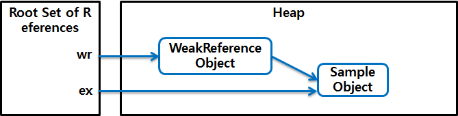
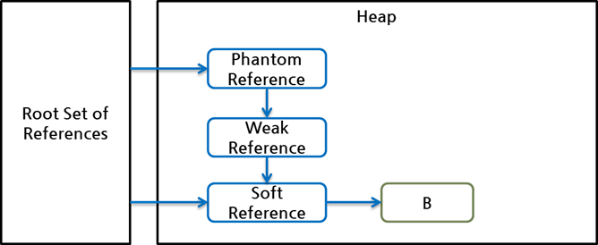

가비지 콜렉터 (GC : Garbege Collector)
가비지 객체 선정
Java GC 는 객체가 가비지 객체인지 판별하기 위해서 reachability 라는 개념을 사용한다.
이는 유효한 참조가 있으면 reachable 로, 없으면 unreachable 로 구별하고 unreachable 객체를 가비지로 간주하여 GC 를 수행한다.
서로 참조하고 있는 객체들을 참조 사슬 이라고 하며 최조의 참조가 이루어져 있는 객체의 참조를 Root Set 이라고 한다.
아래는 런타임 데이터 영역의 구조이다.

Reachability
Heap 영역에 있는 객체들에 대한 참조는 다음 4가지중에 하나이다.
- Heap 영역 내에 있는 다른 객체에 의한 참조
- Java Stack (Java Method 실행시 사용하는 지역변수 및 파라메터들에 의한 참조)
- Native Stack (JNI에 의해 생성된 객체에 대한 참조)
- 메서드 영역의 정적 변수에 의한 참조
이들 중 Heap 내의 다른 객체에 의한 참조를 제외한 나머지 3개가 Root Set 이 되므로 reachability 객체를 판가름 하는 기준이 된다.
이를 적용한 구성은 다음과 같다.

Root Set 에서 시작한 참조 사슬에 속한 객체들은 reachable 객체이고 이와 무관한 객체들을 unreachable 객체로 GC 대상이다.
오른쪽 아래 객체처럼 reachable 객체를 참조하더라도, 다른 reachable 객체가 이 객체를 참조하지 않는다면 이 객체는 unreachable 객체이다. (이 그림에서 참조는 모두 java.lang.ref 패키지를 사용하지 않은 일반적인 참조이다.)
위 구성을 strong reference 라 부른다.
Reference Object
java.lang.ref 는 soft, weak, phantom reference 를 클래스 형태로 제공한다.
java.lang.ref.WeakReference 클래스는 참조 대상인 객체를 캡슐화한 WeakReference 객체를 생성한다.
이렇게 생성한 객체는 Java GC 의 별도 관리 대상이 된다. (캡슐화된 내부 객체는 weak reference 에 의해 참조된다.)
WeakReference<Sample> wr = new WeakReference<Sample>(new Sample());
Sample ex = wr.get();

위 코드에서 WeakReference 클래스의 객체는 new 메서드로 생성된 Sample 객체를 캡슐화한 객체이다.
참조된 Sample 객체는 두번째 줄에서 get 메서드에 의해 다른 참조에 대입된다.
이 시점에서 WeakReference 객체 내의 참조와 ex 참조가 Sample 객체를 가르킨다.
ex = null;

위 코드와 같이 ex 참조에 null 을 대입하면 처음 생성한 Sample 객체는 오직 WeakReference 내부에서만 참조된다.
이를 weakly reachable 상태 객체 라고 한다.
Reference Object
Java 스팩에서
SoftReference,WeakReference,PhantomReference3가지 클래스로 생성된 객체를 말한다. Reference Object 에 의해 참조된 객체를 referent 라고 한다.
Reference와 Reachability
위에서 GC 대상여부를 reachable, unreachable 로 구분하였으며java.lang.ref 패키지를 이용하여 GC 때의 동작을 다르게 지정가능하게끔 개입 할 수 있다.
이를 다음과 같이 표현 가능하다.

- 파랑 : Strongly Reachable Object
- 녹색 : Weakly Reachable Object (GC 대상)
- 빨강 : Unreachable Object (GC 대상)
위 그림에서 WeakReference 객체 자체는 weakly reachable 객체가 아니라 strongly reachable 객체이다.
또한 WeakReference 에 의해 참조되고 있으면서 동시에 root set 에서 시작한 참조사슬에 포함되어 있는 경우 weakly reachable 객체가 아니라 strongly reachable 객체이다.
GC가 동작하여 어떤 객체를 weakly reachable 객체로 판명하면,
GC는 WeakReference 객체에 있는 weakly reachable 객체에 대한 참조를 null 로 설정한다.
이에 따라 weakly reachable 객체는 unreachable 객체와 마찬가지 상태가 되고,
가비지로 판명된 다른 객체들과 함께 메모리 회수 대상이 된다.
Strengths of Reachability
Java GC 는 위에서 말한 근거를 바탕으로 다음 5가지의 Reachability 를 결정한다.
- Strongly Reachable
- root set 으로 부터 시작해서 어떤 reference object 도 중간에 끼어 있지 않는 상태
- 객체까지 도달하는 여러 참조사슬중에 reference object 가 하나라도 없는 객체
- Softly Reachable
- Strongly Reachable 객체가 아닌 객체중에 weak reference, phantom reference 없이 sort reference 가 하나라도 있는 객체
- Weakly Reachable
- Strongly Reachable 나 Softly Reachable 객체도 아닌 객체중에서 phantom reference 없이 weak reference 만 통과하는 참조 사슬이 하나라도 있는 객체
- Phantomly Reachable
- Strongly Reachable 나 Softly Reachable, Weakly Reachable 객체 모두 해당되지 않는 객체
- finalize 되었지만 아직 메모리가 회수되지 않는 상태
- Unreachable
- root set 으로 부터 시작되는 참조 사슬이 참조되지 않는 상태
아래 예시의 객체 B 는 Softly Reachable 이다.

참고자료
영역 구성
GC 를 실행하기 위해 stop-the-world 을 이용하여 모든 애플리케이션 작업을 멈춘다.
이 stop-the-world 를 실행하면 GC 를 실행하는 thread 를 제외한 나머지 thread 는 모두 작업을 멈춘다.
GC 작업을 완료한 이후에는 중단됬던 작업을 다시 시작한다.
JAVA 프로그램 코드에서는 메모리를 명시적으로 지정하여 해제하지 않는다.
이는 Garbage Collector 의해 더 이상 필요없는 객체를 찾아 지우는 작업을 한다.
이 Garbage Collector 의 설계 원칙은 weak generational hypothesis 이라고 하는데 이 원칙은 다음과 같다.
- 대부분의 객체는 금방 접근 불가능한 상태 (unreachable) 상태가 된다.
- 오래된 객체에서 젊은 객체로서의 참조는 극히 드물다.
위 두 가설을 기반으로한 HotSpot VM 에서는 크게 2개의 물리적 공간을 나뉘었다.
바로 아래와 같은 Old Generation Area, Young Generation Area 이다.

Young Generation Area
- 새롭게 생성한 객체가 위치하는 공간
- 대부분의 객체가 금방 접근 불가 상태가 되기 때문에 많은 객체가 Young 에서 생성되었다가 사라진다
- 이 영역에서 객체가 사라질때
Minor GC가 발생한다.
Old Generation Area
- 접근 불가능 상태로 되지 않아 Young 영역에서 살아남은 객체가 여기로 복사된다.
- 대부분의 Young 영역보다 크게 할당하며, Young 영역 보다는 GC 가 적게 발생한다.
- 이 영역에서 객체가 사라질때
Major GC(혹은 Full GC) 가 발생한다.
Permanent Generation Area
- 객체나 억류된 문자열 정보를 저장하는 곳
- 이 영역에서 객체가 사라질때
Major GC가 발생한다.
Old 영역에서 Young 영역 참조가 일어날때는
Card Table이라는 영역을 사용한다.
Young 영역 구성
Young 영역은 다음 3개의 영역으로 구성된다.
- Eden Area (1개)
- Suvivor Area (2개)

- 새로 생성한 대부분의 객체는
Edan영역에 위치한다. Edan영역에서 GC 가 한번 발생한 후 살아남은 객체는Survivor영역 중 하나로 이동된다.- 하나의
Survivor영역이 가득 차게되면 그중 살아남은 객체를 다른Survivor영역으로 이동하고 가득찬Survivor영역은 아무데이터도 없는 상태가 된다. - 이 과정을 반복하며 살아남은 객체는 Old 영역으로 이동하게 된다.
Survivor영역 중 하나는 반드시 비어있는 상태로 남아 있어야 한다. 만약 두Survivor영역이 모두 데이터가 존재하거나, 두개의Survivor영역의 사용량이 0 이라면 시스템은 정상적인 상황이 아니다.
HotSpot VM 의 메모리 할당 기술
Young 영역에는 객체의 이동이 빈번하기 때문에 개선된 메모리 할당 기술이 필요하다.
다음은 HotSpot VM 에서 사용중인 2가지의 메모리 할당 기술이다.
- bump-the-pointer
Eden영역에 할당된 마지막 객체를 추적한다.- 마지막 객체는 TOP 에 위치하고 있기 때문에 삽입하려는 객체의 크기가
Eden영역에 넣기에 적당한지 확인하여 추가한다. - 새로운 객체를 생성할때 마지막에 추가된 객체만 점검하면 되므로 매우 빠르게 메모리 할당이 이루어진다.
- TLABs (Thread Local Allocation Buffers)
- Multi Thread 환경에서 Tread-Safe 하기 위해서 Edan 영역에 Lock 이 발생 할수 밖에 없는데 이를 해결하기 위해서 HotSpot VM 에서 지원하는
TLABs기술이 있다.
- Multi Thread 환경에서 Tread-Safe 하기 위해서 Edan 영역에 Lock 이 발생 할수 밖에 없는데 이를 해결하기 위해서 HotSpot VM 에서 지원하는
Old 영역의 GC
Old 영역은 데이터가 가득차면 GC 를 실행한다.
다음 GC는 JDK 7 기준의 5가지 방법이다.
- Serial GC
- CPU 코어 개수가 적을 때 적합
- Parallel GC
- 메모리와 CPU 코어 개수가 많을 때 유리
- Parallel Old GC (Parallel Compacting GC)
- Concurrent Mark & Sweep GC (CMS)
- 애플리케이션 응답이 중요한 경우 사용 (Low Latency GC)
- 다른 GC 에 비해 메모리와 CPU 를 더 많이 사용
- 다른 GC 에 비해 산재된 메모리가 많을수 있기 때문에
stop-the-world시간이 더 길다.
- G1 (Garbage First) GC
- 가장 최신의 가장 성능이 좋은 GC (JDK 7 이상)
참고자료